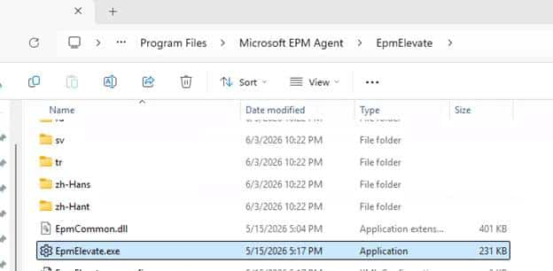
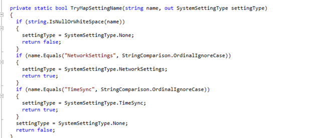
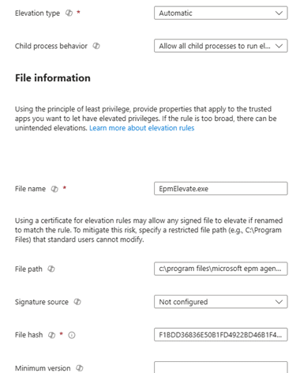
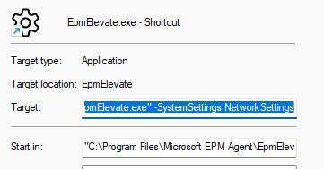
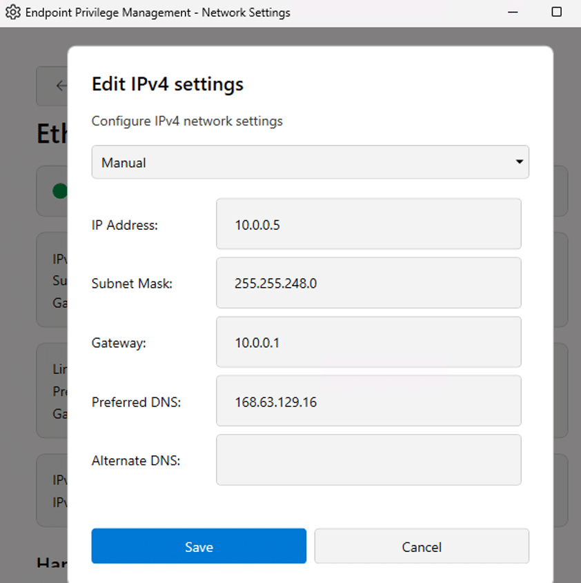
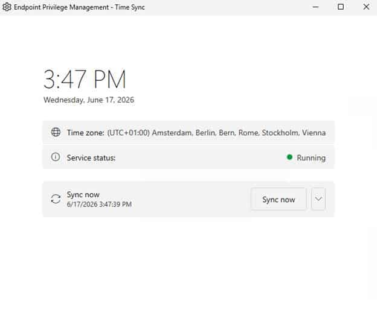

This blog looks at a new Endpoint Privilege Management / EPM system settings experience that appears to be in the works, starting with Network Settings and Time Sync. With Microsoft announcing it in the “What’s new in Microsoft Intune – June” … looks like I am okay to talk about it!
So, I’ll walk through the flight names, the EpmElevate.exe helper, the claim validation, and why this looks like more than just another file elevation rule.
Please note: I am not in any private preview! This is all based on OSINT and my own investigation.
Introduction
Endpoint Privilege Management has always worked best when the elevation target is obvious. You define a rule for an executable, MSI, or PowerShell script, EPM matches the file, and the user can perform that specific action without becoming a local administrator.
That model works well for applications and installers, but Windows administration does not always use a simple executable. Changing the configuration of a network adapter or changing the Time is just different.
Those actions never fitted comfortably into the normal EPM file elevation model. While looking through the latest EPM components, I noticed several new flight names suggesting Microsoft was working to address that gap.
The EPM flights that showed the EPM system settings
While investigating the EPM files on my own test device, I noticed that some new constants appeared inside the EPM agent
- EnableNetworkSettings
- EnableTimeSync
- EnableElevationRuleSystemSettingsEnrichment
The first two are fairly clear. Microsoft is working on network settings and time synchronization scenarios. The other one that also feels important is: EnableElevationRuleSystemSettingsEnrichment
A normal EPM rule describes a file. It can use the filename, path, publisher, certificate, or file hash to decide whether elevation is allowed. A system setting needs more context than that.
EPM does not only need to know which executable started. It also needs to understand which Windows setting the user is trying to change and whether that specific action is permitted by policy. That flight name suggests Microsoft is adding that extra context to the elevation rule.
Finding EpmElevate.exe
The next clue was already sitting inside the Microsoft EPM Agent folder. C:\Program Files\Microsoft EPM Agent\EPMService\EpmElevate.exe


At first, the filename made it look like a generic EPM elevation helper. After decompiling it, it became clear that the executable contains dedicated implementations for network settings and time synchronization. The binary contains three relevant windows:
- NetworkSettings.MainWindow
- TimeSync.MainWindow
- CombinedSettings.CombinedSettingsWindow

That means EPM can open a standalone network window, a standalone time sync window, or one combined system settings window containing both experiences. The command line parser confirms how those windows are selected. The (EpmElevate.exe -SystemSettings NetworkSettings) argument opens the Network Settings window. When looking at the time sync settings, we notice that this command line will do the trick: EpmElevate.exe -SystemSettings TimeSync


When both options are passed, EPM opens the combined window.
EpmElevate.exe -SystemSettings NetworkSettings TimeSync
The combined window is called:
Endpoint Privilege Management – System Settings
So the code does not contain a generic selection screen that asks the user what they want to manage. EPM decides which panels are available before starting the executable and then passes the appropriate arguments.
Trying to launch the EPM System Settings manually
Finding the command line naturally led to the next test. I tried launching EpmElevate.exe manually with the system settings arguments and without elevating it with EPM. The executable started, but immediately closed.

The log explained why.
EpmElevate claim validation failed:
Required claim MEMEPM_RULE_ID is missing or empty.
Process was not launched through the EPM pipeline.
Exiting with ACCESS_DENIED.
The executable validates several EPM claims before parsing the system settings arguments.
- MEMEPM_RULE_ID
- MEMEPM_POLICY_ID
- MEMEPM_INITIATING_PROCESS
The initiating process must also be: EpmService. This is an important part of the design. Running the executable as an administrator is not enough. Launching it as SYSTEM does not help either.
EpmElevate.exe expects to be started by the EPM service with the correct EPM claims attached to its process token. Without those claims, it refuses to continue.
Microsoft did not simply install a privileged network and time configuration tool on the device. The helper only works when EPM launches it from an approved policy context.
A system settings rule is probably required
The claim validation also tells us that an EPM rule is likely part of the final experience. EpmElevate.exe explicitly requires a rule ID and a policy ID. The expected flow appears to be straightforward.
An administrator configures a system settings rule in Intune. That rule allows Network Settings, Time Sync, or both.


After adding the rule, I tried shortcuts I created before… but still no luck


The Network Settings and Time Sync System Settings
The implementation is already present in the EPM Agent, but the full Intune configuration does not appear to be available yet.
A quick note here: I am not in a private preview, I do not have access to a flighted tenant, and I do not have any inside knowledge about how this should be enabled. This is based on what is already present in the client side components.
Network Settings
The Network Settings window is not just hinted at by a string or flight name. The EPM Elevate code contains an actual NetworkSettings.MainWindow implementation.

Its constructor initializes the network configuration service, loads the WPF components, applies the base window setup, and prepares the refresh timer. In other words, this is already real client-side UI logic, not just a future placeholder… Well enough words… let’s look at it…

Once we select the proper adapter we want to change, we will get this screen.


Time Sync
For Time Sync, the code focuses on Windows Time synchronization and NTP configuration. So this should not be described as changing the system clock manually. It is about synchronising time and changing the configured time server.


What is still missing?
After configuring an EPM elevation rule and trying to allow EpmElevate.exe, there still seems to be a missing connection.
Manually creating a shortcut with the right parameters is not user-friendly, and it also does not appear to be the intended flow. There needs to be an entry point. A place where the user can start the action without knowing anything about EpmElevate.exe, command line arguments, or EPM claims.
That place would probably be Company Portal. At the moment, I cannot find the matching Company Portal implementation in the latest version I checked. That might mean the Company Portal side is not there yet, hidden behind flighting, or still being worked on. So the device side pieces are visible, but the full user experience is not complete yet.
Closing thoughts
EPM appears to be moving beyond normal file elevation.
That does not mean users are getting unrestricted access to Windows Settings, and it certainly does not mean they are becoming local administrators. It looks more controlled than that. An administrator approves a specific system setting. The Company Portal gives the user a place to start the action. EPM validates the rule and policy, then launches a trusted helper that performs only the allowed configuration.
Network adapter settings and time synchronization appear to be the first two examples of this new model. That is a useful direction for EPM. Instead of trying to find the right executable to elevate, administrators can approve the Windows action itself.